library(openxlsx)
library(tidyverse)
library(recipes)
library(reshape2)
library(broom)
library(factoextra)
library(tidymodels)
library(tidyclust)
library(dendextend)
library(purrr)Final project
1. Introduction
Since Chinese reform and opening, the Chinese economy has developed rapidly. However, due to the regional unbalanced economic developments, the economic vitality has a huge gap between different cities. At the same time, due to economic transformation and industrial structure adjustment, Chinese provinces and cities face different economic policy challenges. As a result, an objective and comprehensive evaluation of the regional economic vitality and exploring the reasons for such differences to achieve sustainable development of regional coordination is of great significance. In this research, we want to study China’s city-level economic vitality index. The regional economic dynamic is an important indicator to evaluate the economic development in China. It is a helpful indicator for understanding the regional economic development status quo and future economic potential. However, there is no single standard and definition of economic vitality. Due to the complexity of indicators and external influencing factors, it is difficult to use a single factor to estimate economic vitality. Therefore, in this research, we want to use data analysis skills to build a model for economic vitality estimation and a reference for the following study.
city_indicators <- read.xlsx("city.xlsx") %>%
na.omit() 2. Data Description
In the project, we selected 269 cities in China and collected their Macro-level economic indicators. All macro-level data comes from the National Bureau of Statistics of China (NBS). We collected data from 2000 to 2020 and eliminated missing value in 2020. The final data set ranges from 2003 to 2019. Based on the research by Jin(2007), we selected 9 key indicators to estimate economic vitality：
X1: GDP per capita (Ten thousand yuan)
X2: The GDP growth rate
X3: Actual utilization of foreign capital(100 million dollars)
X4: Research funding (100 million yuan)
X5: Gross export (100 million yuan)
X6: Disposable income per capita (100 million yuan)
X7: General college students (Ten thousand people)
X8: fiscal revenue(100 million yuan)
X9: Park green area per capita(m2)
3. Modeling
3.1 Model One
3.1.1 City Ranking
# Find the most occurring year for cross-sectional data with the largest sample size
getmode <- function(v) {
uniqv <- unique(v)
uniqv[which.max(tabulate(match(v, uniqv)))]
}
getmode(city_indicators$year)[1] 2013We selected the year with largest sample size through getmode, which is the year of 2013. We used the year of 2013 for our PCA analysis. We then conducted dimensionality reduction to the data in 2013 to summarize explanatory variables into 5 categories, which included 90% of the 9 independent variables that we used to estimate EV.
city_indicators_2013 <- city_indicators %>%
filter(year == 2013)First We standardizing the data by using the following formula:
\[ \tilde{\alpha} = \frac{\alpha_{ij} - \mu_j}{s_j}, i\in [1,269], j\in [1,9] \] \[ \mu_j = \frac{\sum^{269}_{i=1}{\alpha_{ij}}}{269}, s_j = \sqrt{\frac{\sum^{269}_{i=1}{(\alpha_{ij} - \mu_j)^2}}{269-1}} \] Similarly, we define:
\[ \tilde{x_j} = \frac{x_j - \mu_j}{s_j} \]
# normalize numeric variables
recipe1 <- city_indicators_2013 %>%
recipe() %>%
step_normalize(x1, x2, x3, x4, x5, x6, x7, x8, x9) %>%
prep()Then, we calculate the correlation coefficient matrix: \[ R = \frac{\tilde{A^T}\tilde{A}}{269-1} = \tilde{X^T}\tilde{X}, \tilde{A} = (\tilde{\alpha_{ij}})_{269*9}, \tilde{X} = (\tilde{x_j})_{9*9} \]
# apply estimated mean and sd to original data
city_numeric_data <- recipe1 %>%
bake(new_data = city_indicators_2013)
# look at the correlation matrix
heatmap_data <- city_numeric_data %>%
select(x1, x2, x3, x4, x5, x6, x7, x8, x9) %>%
cor()
ID <- rownames(heatmap_data)
heatmap_data <- melt(heatmap_data, id.vars=c("ID")) %>%
mutate(value = round(value, digits = 2))
ggplot(heatmap_data) +
geom_raster(aes(x = Var1, y = Var2, fill = value)) +
scale_fill_gradient2(low="#003366", high="#990033") +
geom_text(aes(x = Var1, y = Var2, label = value),
size = 5)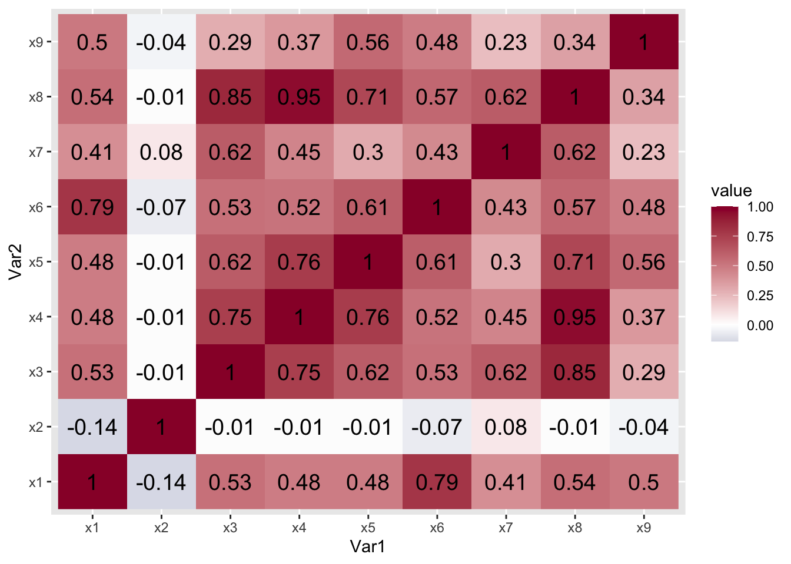
Generally speaking, most of the correlation coefficients are greater than 0.3, indicating that there is a certain degree of correlation among the nine indicators, so we can use PCA to reduce the data dimension.
# estimate the loadings
recipe2 <- city_numeric_data %>%
recipe() %>%
step_pca(x1, x2, x3, x4, x5, x6, x7, x8, x9) %>%
prep(data = city_numeric_data )
# apply loadings to original data
city_pca <- recipe2 %>%
bake(new_data = city_numeric_data)
tidy(recipe2, number = 1, type = "variance") %>%
filter(terms == "cumulative percent variance") %>%
slice_min(value, n = 5)# A tibble: 5 × 4
terms value component id
<chr> <dbl> <int> <chr>
1 cumulative percent variance 54.5 1 pca_lMWcm
2 cumulative percent variance 67.6 2 pca_lMWcm
3 cumulative percent variance 78.0 3 pca_lMWcm
4 cumulative percent variance 86.8 4 pca_lMWcm
5 cumulative percent variance 92.7 5 pca_lMWcmtidy(recipe2, number = 1, type = "variance") %>%
filter(terms == "percent variance") %>%
slice_max(value, n = 5)# A tibble: 5 × 4
terms value component id
<chr> <dbl> <int> <chr>
1 percent variance 54.5 1 pca_lMWcm
2 percent variance 13.1 2 pca_lMWcm
3 percent variance 10.4 3 pca_lMWcm
4 percent variance 8.81 4 pca_lMWcm
5 percent variance 5.87 5 pca_lMWcmThe cumulative contribution rate of the first five principal components exceeds 90%, so we omited the 6th to 9th eigenvalues and keep the first five principal components
Finally, we select the first 5 principal components to evaluate economic vitality \[ EV = 0.54504299Z_1 + 0.13074307Z_2 + 0.10420985Z_3 + 0.08814061Z_4 + 0.05870141Z_5 \] We use the 5 components to evaluate economic vitality and estimated the EV score of the 269 cities. The results are as follows:
pca_numeric_2013 <- city_pca %>%
select(starts_with("PC"))
pca_numeric_2013 <- as.matrix(pca_numeric_2013)
coef1 <- tidy(recipe2, number = 1, type = "variance") %>%
filter(terms == "percent variance") %>%
slice_max(value, n = 5) %>%
select(value)
coef1 <- as.matrix(coef1)
coef1 <- coef1 / 100
EV_score_2013 <- pca_numeric_2013 %*% coef1
city_2013_EV <- bind_cols(select(city_pca, city, city_name),
EV_score = EV_score_2013)city_2013_EV %>%
mutate(EV_rank = case_when(EV_score <= -0.617 ~ "1st Qu",
EV_score > -0.617 & EV_score <= 0 ~ "2nd Qu ",
EV_score > 0 & EV_score <= 0.1768 ~ "3rd Qu ",
EV_score > 0.1768 ~ "4th Qu")) %>%
ggplot() +
geom_boxplot(mapping = aes(x = EV_rank,
y= EV_score),
alpha = 0.4,
width = 0.8) +
labs(title = (paste("The Distribution and Comparison of the Economic Vitality of Chinese Cities")),
caption = "Data: National Bureau of Statistics of China",
x = "Economic vitality score distribution",
y = "Economic vitality score")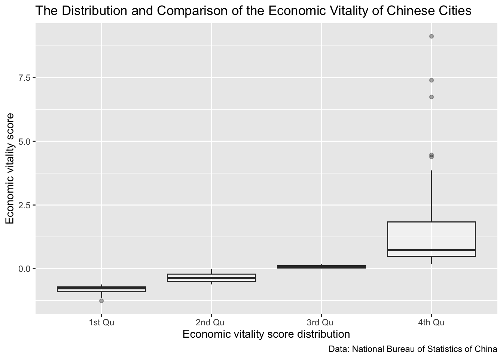
ev_plot <- city_2013_EV %>%
select(city_name, EV_score) %>%
filter(EV_score >= 1)
ggplot() +
geom_bar(data = ev_plot,
mapping = aes(x = EV_score,
y = reorder(city_name, EV_score)),
stat = "identity") +
labs(title = (paste("The specific scores of cities with high economic vitality\nin China")),
y = "City Name",
caption = "Data: National Bureau of Statistics of China")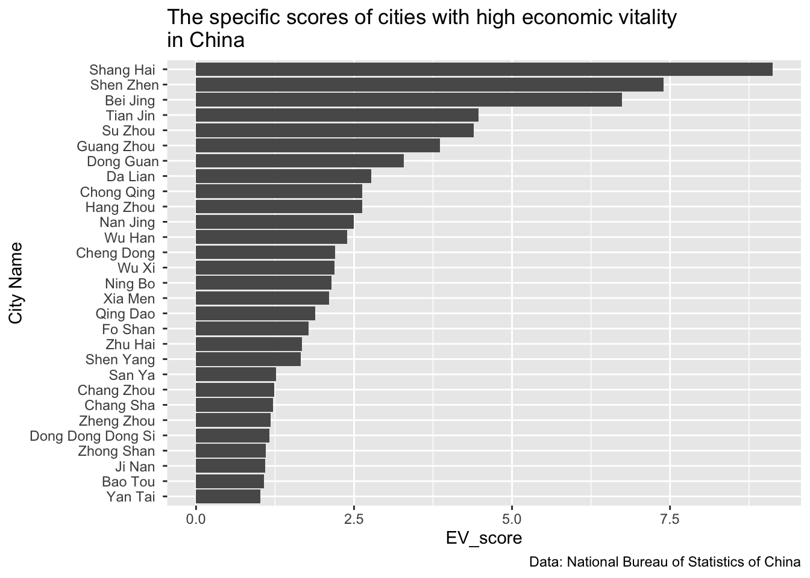
ggplot() +
geom_point(data = city_pca,
aes(PC1, PC2),
alpha = 0.5) +
geom_text(data = filter(city_pca, PC1 >= 5),
aes(PC1, PC2, label = city_name),
size = 2) +
labs(title = "PC1 and PC2 for City Data in 2013",
x = "PC1 (0.55 of Variation)",
y = "PC2 (0.13 of Variation)",
caption = "Data: National Bureau of Statistics of China") +
coord_equal() +
theme_minimal()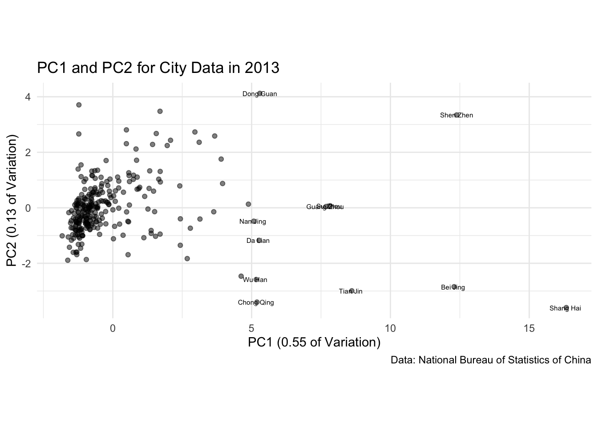
We visualized the estimated EV score by different quantiles. From the result, we can see that the top quantile accounted for the most amount of the EV score. The four outliers, including Shanghai, Shenzhen, Beijing, and Tianjin, had higher EV scores than other cities in the dataset. From the result, we can conclude that large cities have better economic vitality, especially in the economic sector. The economic development trend is still centered in the larger cities, which will attract more talent and capital. Another trend in the visualization is that most cities in China have relatively low EV scores. The average is 0, and more than 50% of cities have EV scores below 0. The result shows that the economic development between large and small cities is highly unequal.
3.1.2 Cluster Analysis
Based on the data in 2013, we plan to classify the 269 cities according to common characteristics, so as to facilitate the subsequent policy analysis.
kmeans_rec <- recipe(
formula = ~ .,
data = city_indicators_2013) %>%
step_select(all_numeric())
city_numeric <- kmeans_rec %>%
prep() %>%
bake(new_data = city_indicators_2013)
set.seed(20221126)
fviz_nbclust(city_numeric, FUN = kmeans, method = "wss")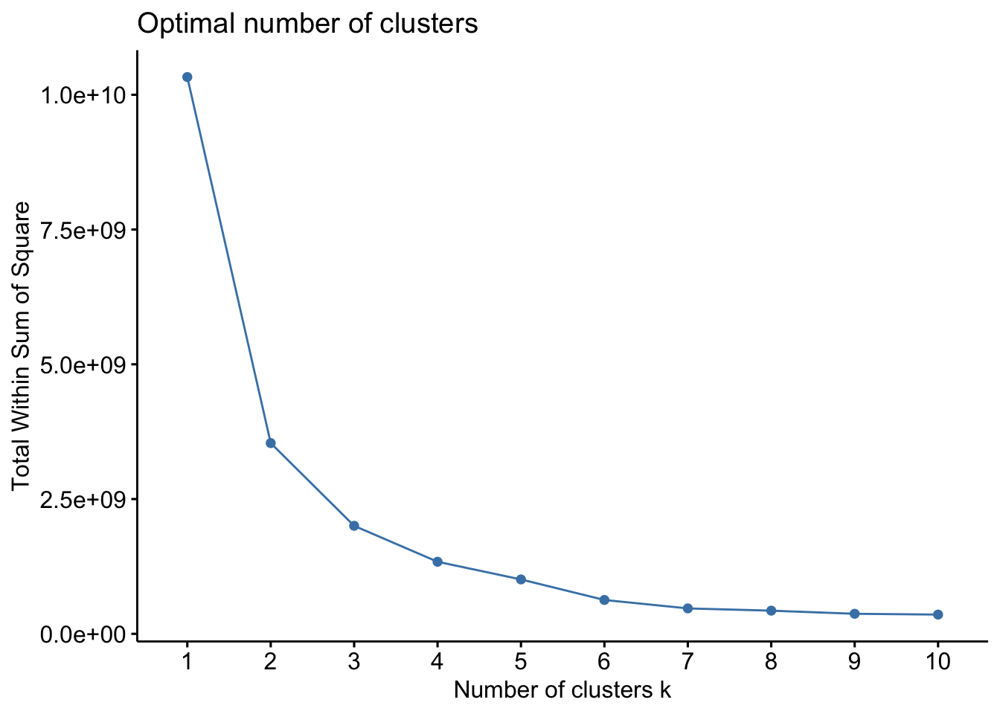
fviz_nbclust(city_numeric, FUN = kmeans, method = "silhouette")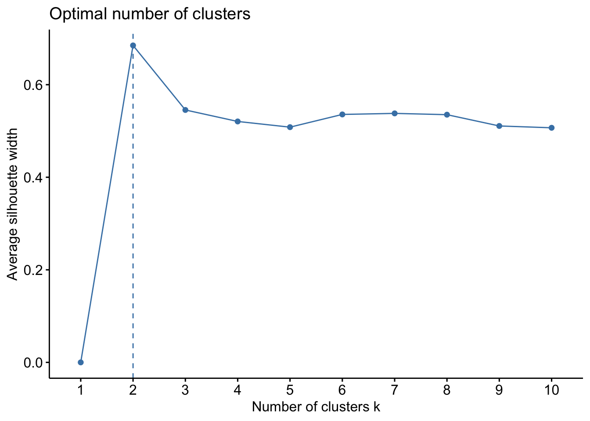
fviz_nbclust(city_numeric, FUN = kmeans, method = "gap_stat")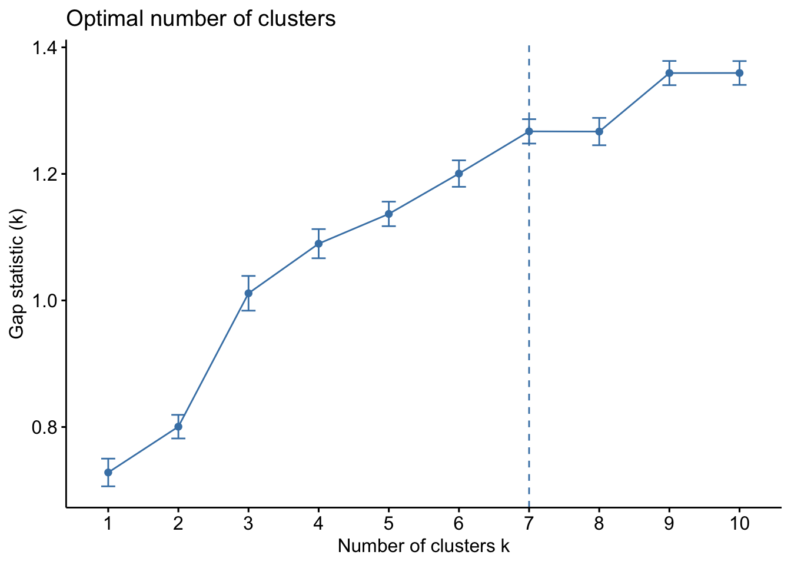
In the selection of K, we have two optimal choices of K = 2 and K = 7.
# create a kmeans model object four clusters
city_kmeans_spec <- k_means(num_clusters = 2) %>% # number of clusters
set_engine("stats", nstart = 100) # number of random starts
# create a workflow
city_kmeans_wflow <- workflow(preprocessor = kmeans_rec,
spec = city_kmeans_spec)
# fit the model
city_kmeans_2 <- city_kmeans_wflow %>%
fit(data = city_indicators_2013)
city_kmeans_spec <- k_means(num_clusters = 7) %>%
set_engine("stats", nstart = 100)
city_kmeans_wflow <- workflow(preprocessor = kmeans_rec,
spec = city_kmeans_spec)
city_kmeans_7 <- city_kmeans_wflow %>%
fit(data = city_indicators_2013)
city_clusters <- bind_cols(city_pca,
cluster2 = city_kmeans_2 %>%
extract_cluster_assignment() %>%
pull(.cluster),
cluster7 = city_kmeans_7 %>%
extract_cluster_assignment() %>%
pull(.cluster))
ggplot() +
geom_point(
data = city_clusters,
mapping = aes(PC1, PC2, color = factor(cluster2)),
alpha = 0.5) +
geom_text(data = filter(city_pca, PC1 >= 5),
aes(PC1, PC2, label = city_name),
size = 2) +
labs(title = "K-Means with K=2 and PCA",
x = "PC1 (0.55 of Variation)",
y = "PC2 (0.13 of Variation)") +
theme_minimal() +
guides(text = NULL)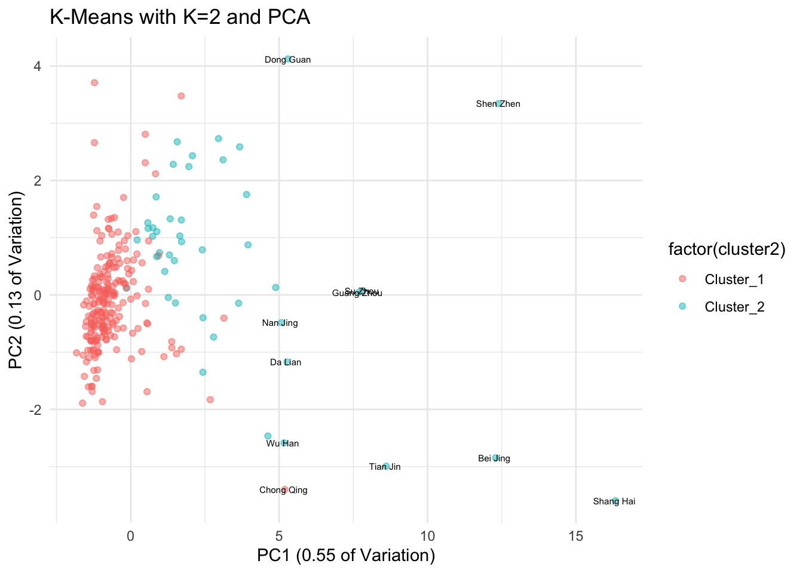
d1 <- dist(city_numeric_data, method = "euclidean")
hclust_euc <- stats::hclust(d1, method = "ward.D2")
plot(hclust_euc, cex = 0.6)
rect.hclust(hclust_euc, k = 2, border = 2:5)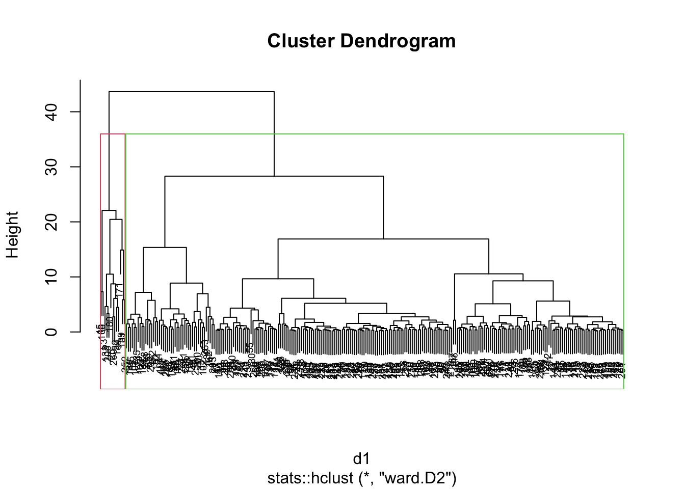
sub_grp1 <- cutree(hclust_euc, k = 2)
fviz_cluster(list(data = city_numeric_data %>% select(starts_with("x")),
cluster = sub_grp1))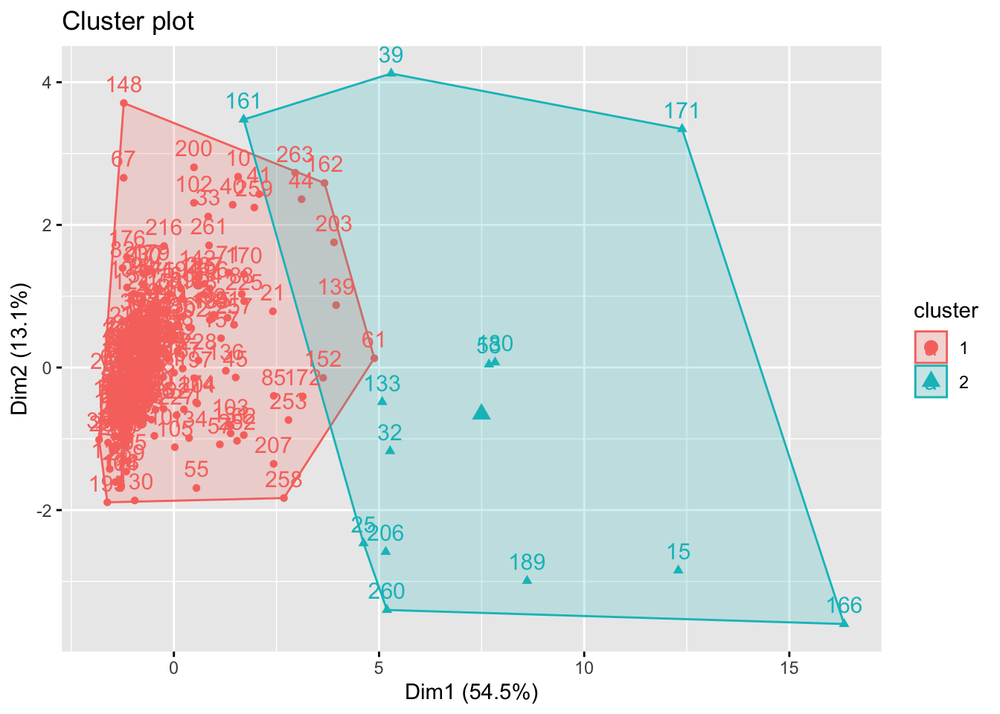
ggplot() +
geom_point(
data = city_clusters,
mapping = aes(PC1, PC2, color = factor(cluster7)),
alpha = 0.5) +
geom_text(data = filter(city_pca, PC1 >= 5),
aes(PC1, PC2, label = city_name),
size = 2) +
labs(title = "K-Means with K=7 and PCA",
x = "PC1 (0.55 of Variation)",
y = "PC2 (0.13 of Variation)") +
theme_minimal() +
guides(text = NULL)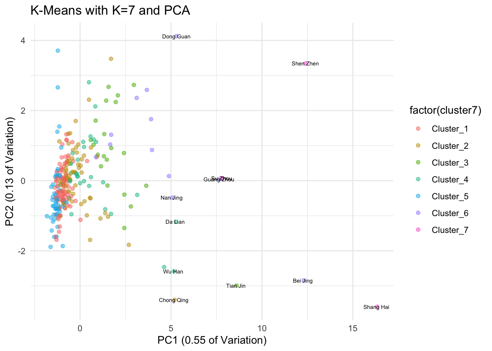
d2 <- dist(city_numeric_data, method = "euclidean")
hclust_euc <- stats::hclust(d2, method = "ward.D2")
plot(hclust_euc, cex = 0.6)
rect.hclust(hclust_euc, k = 7, border = 2:5)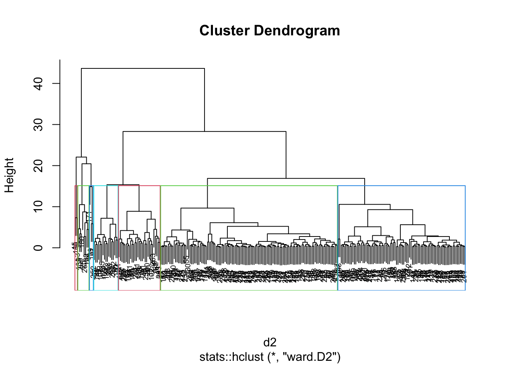
sub_grp2 <- cutree(hclust_euc, k = 7)
fviz_cluster(list(data = city_numeric_data %>% select(starts_with("x")),
cluster = sub_grp2))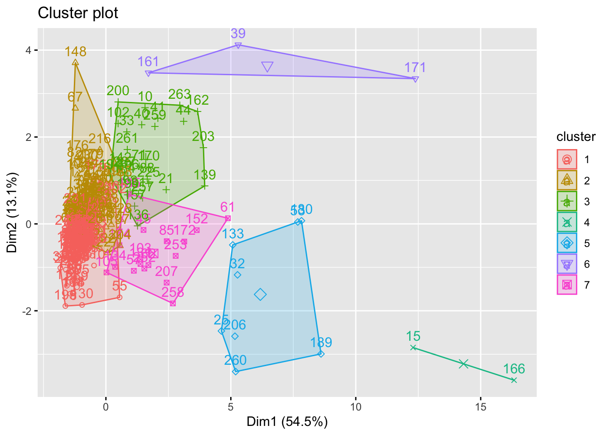
city_2013_k2 <- city_indicators_2013 %>%
select(starts_with("x")) %>%
mutate(cluster = sub_grp1) %>%
mutate(ev_score = EV_score_2013)
city_2013_k2 %>%
group_by(cluster) %>%
summarise(mean(x1), mean(x2), mean(x3), mean(x4), mean(x5), mean(x6),
mean(x7), mean(x8), mean(x9), mean(ev_score)) %>%
knitr::kable(digits = 3)| cluster | mean(x1) | mean(x2) | mean(x3) | mean(x4) | mean(x5) | mean(x6) | mean(x7) | mean(x8) | mean(x9) | mean(ev_score) |
|---|---|---|---|---|---|---|---|---|---|---|
| 1 | 4.662 | 9.808 | 6.261 | 4.643 | 254.402 | 24132.33 | 7.453 | 148.636 | 3.373 | -0.207 |
| 2 | 11.583 | 10.811 | 84.598 | 80.447 | 5293.527 | 36288.00 | 49.334 | 1579.576 | 21.297 | 4.079 |
city_2013_k7 <- city_indicators_2013 %>%
select(starts_with("x")) %>%
mutate(cluster = sub_grp2) %>%
mutate(ev_score = EV_score_2013)
city_2013_k7 %>%
group_by(cluster) %>%
summarise(mean(x1), mean(x2), mean(x3), mean(x4), mean(x5), mean(x6),
mean(x7), mean(x8), mean(x9), mean(ev_score)) %>%
knitr::kable(digits = 3)| cluster | mean(x1) | mean(x2) | mean(x3) | mean(x4) | mean(x5) | mean(x6) | mean(x7) | mean(x8) | mean(x9) | mean(ev_score) |
|---|---|---|---|---|---|---|---|---|---|---|
| 1 | 3.083 | 12.787 | 2.812 | 2.436 | 76.250 | 21369.29 | 3.798 | 86.518 | 2.421 | -0.634 |
| 2 | 4.081 | 6.115 | 4.689 | 3.567 | 109.827 | 23691.56 | 4.644 | 123.361 | 2.771 | -0.191 |
| 3 | 11.574 | 8.110 | 13.655 | 11.058 | 1138.633 | 34261.69 | 7.443 | 293.033 | 7.652 | 0.903 |
| 4 | 14.952 | 8.053 | 126.519 | 246.167 | 8278.499 | 42086.18 | 54.700 | 3885.309 | 14.805 | 7.930 |
| 5 | 11.617 | 11.255 | 93.783 | 50.074 | 3461.829 | 33858.09 | 64.180 | 1319.476 | 9.809 | 3.152 |
| 6 | 9.247 | 11.466 | 32.159 | 50.959 | 8188.075 | 38902.33 | 6.168 | 736.017 | 56.262 | 3.983 |
| 7 | 7.200 | 10.445 | 26.542 | 15.108 | 772.908 | 28963.41 | 48.253 | 478.939 | 6.020 | 0.882 |
Through expert check and visualization with PCA, we judge that both clusters have very high quality (there are large differences between groups). k = 2 shows differences in all nine feature means, especially on PC1 and PC2. This is also directly reflected in the ev_score of the two groups; that is, they represent the two types of cities with low urban economic vitality and high urban economic vitality in China. When k = 7, several groups except cluster 4 have a commonality in ev_score (cluster 5 is similar to 6, and the remaining four groups are similar). However, their differences are more detailed in different characteristics. We can find out the advantages and disadvantages of developing a certain cluster city by comparing specific groups to provide policy recommendations in more detail. We can further compare the advantages and disadvantages of the two clustering through a stability analysis. However, since this paper is an application of the existing method of analyzing the economic vitality of Chinese cities using nine characteristics in the literature, it does not consider the selection of variables through the robustness test and further optimization of the model in the paper.
3.2 Model Two
In this section, we will select a representative from each cluster for short-term and long-term policy analysis. Weihai is the representative of cluster1, and Beijing is the representative of cluster2. In this part, we conduct PCA analysis on the entire panel data and use this to judge the changes in the economic vitality of each city over time. At the same time, we will also pay attention to the relationship between urban economic vitality and the changing trend of principal components.
recipe <- city_indicators %>%
recipe() %>%
step_normalize(x1, x2, x3, x4, x5, x6, x7, x8, x9) %>%
prep()
numeric_dataframe <- recipe %>%
bake(new_data = city_indicators)
recipe_new <- numeric_dataframe %>%
recipe() %>%
step_pca(x1, x2, x3, x4, x5, x6, x7, x8, x9) %>%
prep(numeric_dataframe)
pca <- recipe_new %>%
bake(new_data = numeric_dataframe)
pca_numeric <- pca %>%
select(starts_with("PC"))
pca_numeric <- as.matrix(pca_numeric)
coef2 <- tidy(recipe_new, number = 1, type = "variance") %>%
filter(terms == "percent variance") %>%
slice_max(value, n = 5) %>%
select(value)
coef2 <- as.matrix(coef2)
coef2 <- coef2 / 100
EV_score <- pca_numeric %*% coef2
EV <- bind_cols(select(pca, year,city_name, PC1, PC2, PC3, PC4, PC5),
ev_score = EV_score)ggplot() +
geom_boxplot(data = EV,
mapping = aes(x = as.character(year),
y = ev_score),
alpha = 0.4,
width = 0.8) +
geom_text(data = filter(EV, ev_score >= 5),
aes(as.character(year), ev_score, label = city_name),
size = 2) +
labs(title = (paste("Overall Changes in the Economic Vitality of Chinese Cities")),
caption = "Data: National Bureau of Statistics of China",
x = "Year",
y = "Economic vitality score")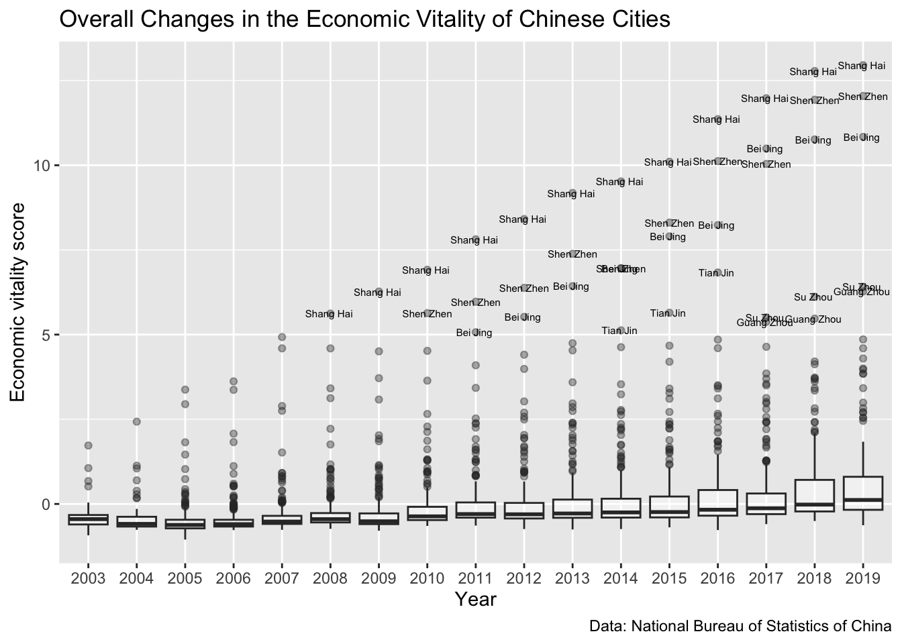
From the figure, we can see that the economic vitality of cities in China has not changed much and is still at a low level. However, the cities represented by Shanghai and Beijing are developing rapidly and their development level is significantly higher than the average level.
tidy(recipe_new, number = 1, type = "coef") # A tibble: 81 × 4
terms value component id
<chr> <dbl> <chr> <chr>
1 x1 0.355 PC1 pca_XGxiE
2 x2 -0.0972 PC1 pca_XGxiE
3 x3 0.388 PC1 pca_XGxiE
4 x4 0.391 PC1 pca_XGxiE
5 x5 0.369 PC1 pca_XGxiE
6 x6 0.331 PC1 pca_XGxiE
7 x7 0.283 PC1 pca_XGxiE
8 x8 0.417 PC1 pca_XGxiE
9 x9 0.250 PC1 pca_XGxiE
10 x1 -0.341 PC2 pca_XGxiE
# … with 71 more rowstidy(recipe_new, number = 1, type = "variance")# A tibble: 36 × 4
terms value component id
<chr> <dbl> <int> <chr>
1 variance 4.76 1 pca_XGxiE
2 variance 1.37 2 pca_XGxiE
3 variance 0.899 3 pca_XGxiE
4 variance 0.732 4 pca_XGxiE
5 variance 0.554 5 pca_XGxiE
6 variance 0.270 6 pca_XGxiE
7 variance 0.224 7 pca_XGxiE
8 variance 0.145 8 pca_XGxiE
9 variance 0.0514 9 pca_XGxiE
10 cumulative variance 4.76 1 pca_XGxiE
# … with 26 more rowsdf_beijing <- EV %>%
filter(city_name == "Bei Jing ") %>%
select(year, PC1, PC2, PC3, PC4, PC5, ev_score)
ggplot(data = df_beijing) +
geom_line(mapping = aes(x = year, y = ev_score), size=1) +
geom_point(mapping = aes(x = year, y = ev_score)) +
geom_line(mapping = aes(x = year, y = PC1), size = 1, color = "red") +
geom_point(mapping = aes(x = year, y = PC1), color = "red") +
geom_line(mapping = aes(x = year, y = PC2), size = 1, color = "blue") +
geom_point(mapping = aes(x = year, y = PC2), color = "blue") +
geom_line(mapping = aes(x = year, y = PC3), size = 1, color = "green") +
geom_point(mapping = aes(x = year, y = PC3), color = "green") +
geom_line(mapping = aes(x = year, y = PC4), size = 1, color = "yellow") +
geom_point(mapping = aes(x = year, y = PC4), color = "yellow") +
geom_line(mapping = aes(x = year, y = PC5), size = 1, color = "orange") +
geom_point(mapping = aes(x = year, y = PC5), color = "orange") +
scale_x_continuous(breaks = c(2003, 2007, 2011, 2015, 2019)) +
labs(title = (paste("Beijing's urban economic vitality and the changing trend\nof each principal component")),
subtitle = "Black: Economic Vitality, Red: PC1, Blue: PC2,\nGreen: PC3, Yellow: PC4, Orange: PC5",
caption = "Data: National Bureau of Statistics of China",
x = "Year",
y = "Economic vitality score")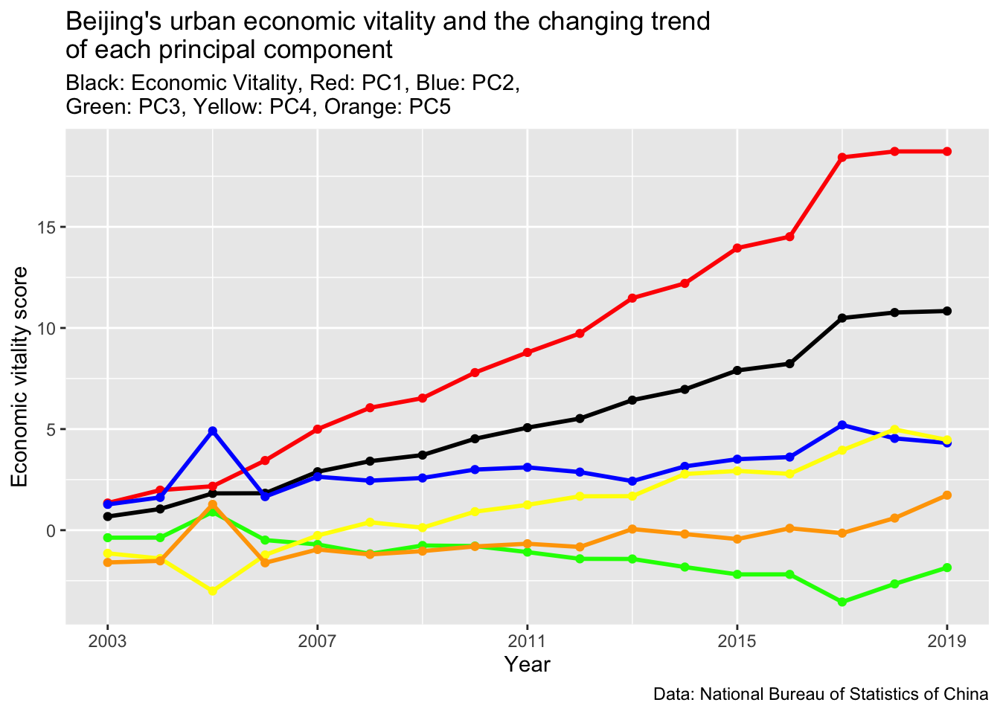
3.2.1 Explanations for each PC line:
PC1 line in red emphasizes X1, X3, X4, X8, which are all related to the financial revenues, with these four values above 0.35.
PC2 line in blue is mostly determined by x2 (GDP growth rate) which amounts to 0.67.
PC3 line in green is mainly driven by x9 (park green area per capita) which accounts for 0.75.
PC4 line in yellow focuses on x4 (research capital) which amounts to 0.38.
PC5 line in orange focuses most equally on x1(GDP per capita, 0.44), x2 (GDP growth rate, 0.56), and x6 (disposable income per capita, 0.41).
3.2.2 A brief study on Beijing
Based on the graph, we can find that the red line (PC1) is the main contributor to EV in Beijing, with a significant upward trend during the analysis. PC1 emphasizes X1, X3, X4, X8 with all these four values above 0.35, within which X8 (the fiscal revenue) makes the biggest contribution to the performance of PC1. We can conclude that factors related to fiscal revenue have an essentially positive relationship with EV. We witness a negative value of X2 (the GDP growth rate) in PC1, which makes sense because it is difficult for Beijing, having such an enormous economic volume, to own a large GDP growth rate. However, the green line (PC3), which focuses on X9 (park green area) having a value of 0.75, directs downward with EV scores below 0 in general. We conclude that environmental factors play an insignificant role in Beijing’s economic vitality development.
We take a closer look at the time from 2016 to 2017, when EV in Beijing shows an obvious increase. PC1 accounts for this abrupt rise because it has the largest slope and compensates for the decrease of PC3 and PC5. This result corresponds with the conclusion we make above; that is, the X8 (the fiscal revenue), the most important part of PC1, contributes most to the development of EV in Beijing. Generally, factors related to the fiscal revenue matter most to the EV in Beijing, while the environmental factors matter least. We conclude that EV for the cluster of cities represented by Beijing is closely related to factors like fiscal revenue. Besides, as a policy suggestion, we think that governments of cities within this cluster can invest more in environmental aspects, which could be a new growth incentive after the post-2017 slowdown of EV.
df_weihai <- EV %>%
filter(city_name == "Wei Hai ") %>%
select(year, PC1, PC2, PC3, PC4, PC5, ev_score)
ggplot(data = df_weihai) +
geom_line(mapping = aes(x = year, y = ev_score), size=1) +
geom_point(mapping = aes(x = year, y = ev_score)) +
geom_line(mapping = aes(x = year, y = PC1), size = 1, color = "red") +
geom_point(mapping = aes(x = year, y = PC1), color = "red") +
geom_line(mapping = aes(x = year, y = PC2), size = 1, color = "blue") +
geom_point(mapping = aes(x = year, y = PC2), color = "blue") +
geom_line(mapping = aes(x = year, y = PC3), size = 1, color = "green") +
geom_point(mapping = aes(x = year, y = PC3), color = "green") +
geom_line(mapping = aes(x = year, y = PC4), size = 1, color = "yellow") +
geom_point(mapping = aes(x = year, y = PC4), color = "yellow") +
geom_line(mapping = aes(x = year, y = PC5), size = 1, color = "orange") +
geom_point(mapping = aes(x = year, y = PC5), color = "orange") +
scale_x_continuous(breaks = c(2004, 2008, 2012, 2016, 2020)) +
labs(title = (paste("Weihai's urban economic vitality and the changing trend\nof each principal component")),
subtitle = "Black: Economic Vitality, Red: PC1, Blue: PC2,\nGreen: PC3, Yellow: PC4, Orange: PC5",
caption = "Data: National Bureau of Statistics of China",
x = "Year",
y = "Economic vitality score")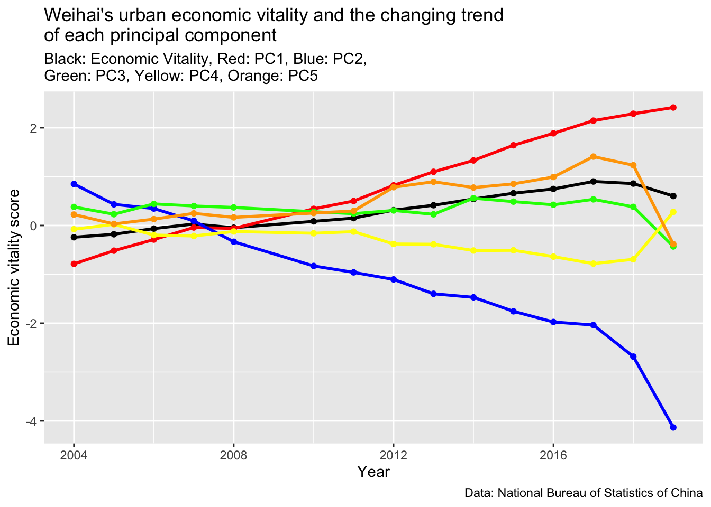
3.2.3 A brief study on Weihai
As we mentioned above, factors related to fiscal revenue have an essentially positive relationship with EV shown by PC1. PC3 is mainly driven by x9 (park green area per capita, 0.75), and PC2 is mainly driven by x2 (GDP growth rate, 0.67). In this sense, Beijing’s EV relies heavily on its fiscal revenues and performs much worse in environmental terms. For a less developed city like Weihai, fiscal revenue remains an important driver of its EV, but performs relatively well on the environmental dimension. We also witness a surprisingly year-to-year decline in EV mainly determined by the GDP growth rate in Weihai, especially after the COVID-19 outbreak in 2019.
4. Conclusions and Policy Alternatives
The differences between Beijing and Weihai are mainly related to the development constraints and political agenda of urban development in China. Several studies show that the environment protection and urbanization development are in the strong mutual restriction state with non-benign coupling and uncoordinated (Wang et al., 2013, Xu et al., 2019, She et al., 2021). The above visualization results show that China has neglected the collaboration between urban development and the environment protection in the time period studied by this paper, namely before 2019. Wang et al, (2009) argue that this is because the Chinese government has addressed the problem more from the surface of pollution than from its root causes. In particular, Beijing’s EV, driven mainly by park green area per capita, continued to decline, which was a major challenge posed by economic development on environmental pollution. However, with President Xi Jinping’s emphasis on the importance of environmental governance in his 13th Five-Year Plan from 2016 to 2020, Beijing achieved three consecutive years of growth in environment-related urban dynamism from 2017 to 2019, but unfortunately, with that, revenue-related urban dynamism seems to have entered a weak patch. Investment in environmental governance at the expense of economic development is also currently a major concern for many countries other than China, for example, Fu and Li (2020) find that the increase of GDP per capita is associated with the more severe PM2.5 pollution.
Furthermore, we believe that our visualization results are highly consistent with the political agenda of urban development in China. In addition to the advantage as the capital, Beijing, collaborating with Tianjin and Hebei, forms one of the leading urban agglomerations in China, which means that the three regions are encouraged to build a high level of cooperation in economic development. Li et al. (2022), using the data from 2003 to 2017, find that urban agglomeration, a development mode, with more development enthusiasm gave play to regional advantages and achieved coordinated development than single region, with attracting lots of investment from the central government and the individual investors. On the contrary, Weihai, as a single city, lacks collaborative assistance and financial investment in economic development.
We propose two policy alternatives, that is, to raise the importance of environmental issues at the national strategic level and to accelerate the energy transition to break the mutual constraint between economic development and environmental protection. We suggest that the Chinese government should introduce policies to bring more development opportunities to marginal cities such as Weihai in the post-epidemic era when the economic development of first-tier cities such as Beijing has slowed down. Ang the formation of an urban agglomeration with neighboring Qingdao and Jinan, which are more well-developed cities, is a feasible and highly profitable policy option. In addition, how to break the constraint between economic development and environmental protection should be an urgent consideration for all economists and environmental advocates. We believe that the renewable energy transition will not only effectively solve the problem of energy scarcity in industrial development, but also promote the emergence of Chinese industries such as photovoltaics, wind energy, and lithium batteries, thus ensuring the continued cites’ EV (Marrone & Montella, 2022).
Bibliography
Fu, Z., & Li, R. (2020). The contributions of socioeconomic indicators to global PM2.5 based on the hybrid method of spatial econometric model and geographical and temporal weighted regression. Science of The Total Environment, 703, 135481. https://doi.org/10.1016/j.scitotenv.2019.135481
Jin, Y. J. (n.d.). 中国城市经济活力. Wanfang Data. Retrieved December 11, 2022, from http://www.wanfangdata.com.cn/details/detail.do?_type=perio&id=dlk+x200701002
Li, X., Lu, Z., Hou, Y., Zhao, G., & Zhang, L. (2022). The coupling coordination degree between urbanization and air environment in the beijing(jing)-tianjin(jin)-hebei(ji) urban agglomeration. Ecological Indicators, 137, 108787. https://doi.org/10.1016/j.ecolind.2022.108787
Marrone, P., & Montella, I. (2022). An experimentation on the limits and potential of renewable energy communities in the built city: Buildings and proximity open spaces for energy decentralization. Renewable and Sustainable Energy Transition, 2, 100025. https://doi.org/10.1016/j.rset.2022.100025
She, Q., Cao, S., Zhang, S., Zhang, J., Zhu, H., Bao, J., Meng, X., Liu, M., & Liu, Y. (2021). The impacts of comprehensive urbanization on PM2.5 concentrations in the Yangtze River Delta, China. Ecological Indicators, 132, 108337. https://doi.org/10.1016/j.ecolind.2021.108337
Wang, Y. Q., Zhang, X. Y., & Draxler, R. R. (2009). TrajStat: GIS-based software that uses various trajectory statistical analysis methods to identify potential sources from long-term air pollution measurement data. Environmental Modelling & Software, 24(8), 938–939. https://doi.org/10.1016/j.envsoft.2009.01.004
Wang, Y. Q., Zhang, X. Y., & Draxler, R. R. (2009). TrajStat: GIS-based software that uses various trajectory statistical analysis methods to identify potential sources from long-term air pollution measurement data. Environmental Modelling & Software, 24(8), 938–939. https://doi.org/10.1016/j.envsoft.2009.01.004
Xu, S.-C., Miao, Y.-M., Gao, C., Long, R.-Y., Chen, H., Zhao, B., & Wang, S.-X. (2019). Regional differences in impacts of economic growth and urbanization on air pollutants in China based on provincial panel estimation. Journal of Cleaner Production, 208, 340–352. https://doi.org/10.1016/j.jclepro.2018.10.114